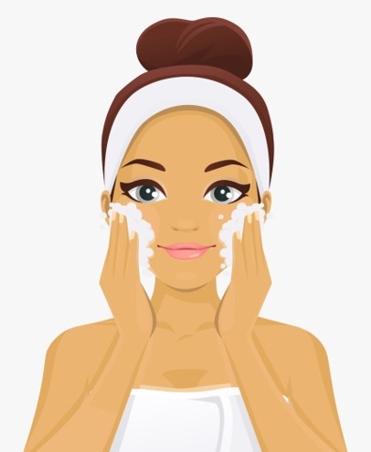
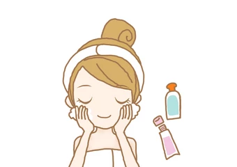
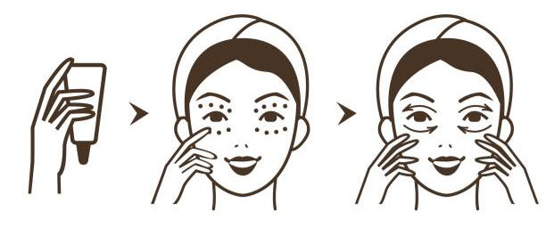
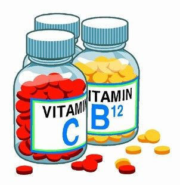

It’s mentioned often with skincare tips because it’s a staple: wash your face. Depending on your skin type, it might be good to even do it twice a day! This would involve using lighter products in the morning and heavier products in the evening, as they can really soak in, purify, and repair the skin while you sleep. Don’t forget: the best time to put on your facial cleanser, moisturizer, and all your skincare products in between is right after a shower when your pores are open to absorbing their vitamins and nutrients.
Want to get glowing skin naturally? It starts from the inside, out. This means you’ll need to drink plenty of water to keep your body hydrated and healthy. Take at least the recommended 8 cups a day and within 2 months you’ll see a huge boost in your skin appearance.
One of the easiest but most forgotten face glow tips is to wear sunscreen—and not just to the beach. Aim for not leaving the house without at least some facial sunscreen on to prevent wrinkles, sun spots, loss of skin elasticity, and even skin cancer. An SPF of 30 and above will promote skin hydration..
Munch on snacks containing or cook meals featuring plenty of omega-3 fatty acids to strengthen your skin’s natural barrier to the environment. This would be food such as walnuts, olive oil, and salmon.
Eye cream is NOT just for mature or sleep-deprived people! The skin around your eyes can easily dry out, swell, or lose elasticity. You’ll want to keep the area moisturized with a specially-designed formula for the thin, sensitive skin to prevent lines, wrinkles, and dark baggy under eye circles
Known for their bevy of healthful properties, antioxidants, which encompasses vitamins like A, C, and E, help your skin protect itself against UV radiation and air pollution. Look for green, leafy vegetables, tomatoes, and berries on your next grocery run.
It’s no wonder it’s sometimes called beauty sleep: getting enough rest serves as one of the fundamental beauty care tips for your body’s health and wellness. This is because as you actively sleep, your skin can repair and rebuild itself within interruption. Be sure you get at least 8 hours of sleep each night for the sake of your mental and physical health!
We’re ending our favorite skin beauty tips list with the holy grail; get all of your makeup off before bed. Whether you’re exhausted after a long day or not: your skin will stay dull, dehydrated, and appear to have more visible lines if you don’t. Most importantly, if you don’t remove your makeup, it will gunk up your pores, causing skin redness, irritation, and acne breakouts. Prevent this skin damage with a gentle makeup cleanser.